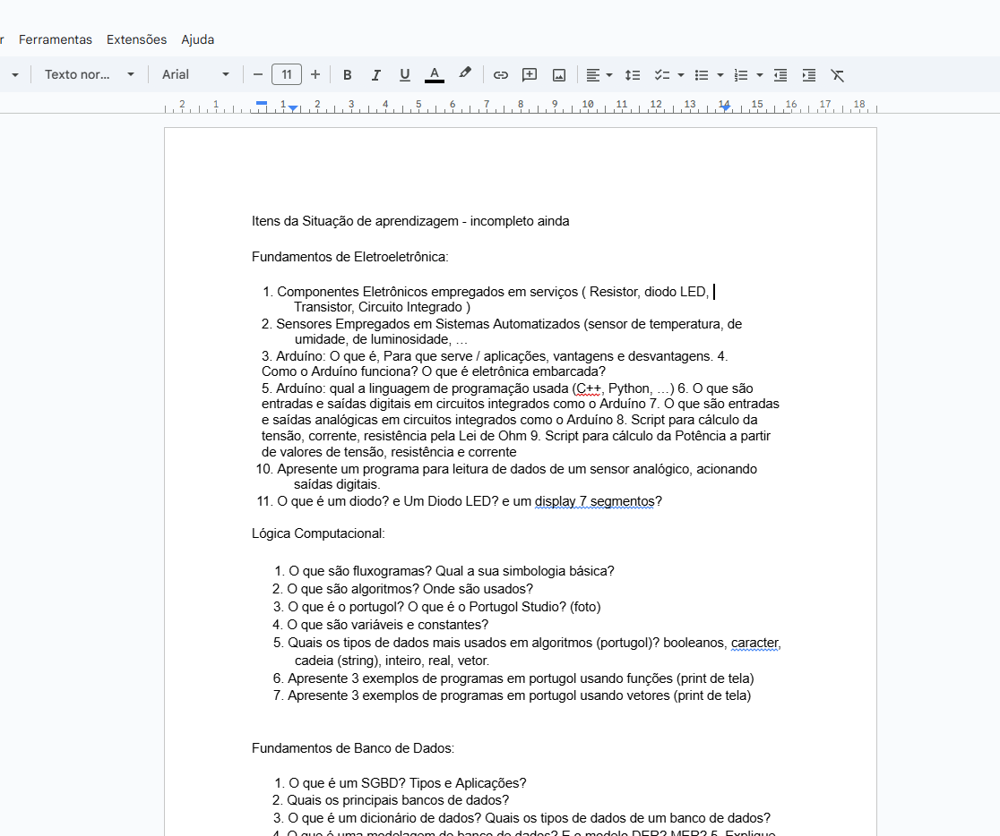
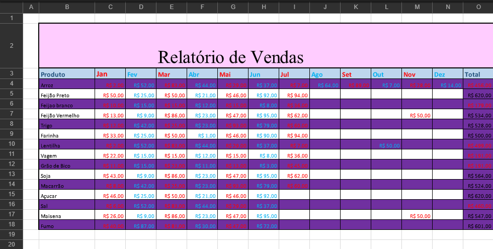

Componentes Eletrônicos empregados em serviços
( Resistor, diodo LED, Transistor, Circuito Integrado )
Componentes Eletrônicos Empregados em Serviços:
Os componentes eletrônicos são fundamentais para o funcionamento de equipamentos utilizados em diversos serviços, como manutenção de aparelhos, sistemas de automação, dispositivos eletrônicos e máquinas industriais. Entre os principais componentes presentes na maioria dos circuitos estão os resistores, os diodos LED, os transistores e os circuitos integrados. Cada um deles possui funções específicas que contribuem para o controle e o processamento da energia elétrica dentro de um sistema.

Microsoft Word (editor de texto):
Função: É usado para criar, editar e formatar textos.
Utilizado para:
- Criar trabalhos escolares e relatórios.
- Digitar redações.
- Montar contratos e documentos.
- Criar currículos.
Exemplo:
Microsoft Excel (planilha eletrônica):
Função: Permite criar planilhas para cálculos, tabelas, gráficos e análises de dados.
Utilizado para:
- Fazer cálculos automáticos (média, soma, porcentagem).
- Criar tabelas organizadas.
- Criar gráficos para atividades de matemática e estatística.
- Controlar gastos e finanças.
Exemplo:

Microsoft PowerPoint (apresentações):
Função: Usado para criar apresentações com slides, imagens, textos, tabelas e animações.
Utilizado para:
- Criar apresentações orais para trabalhos escolares.
- Produzir slides com tópicos e imagens.
- Montar explicações visuais sobre um tema.
- Criar projetos com gráficos, vídeos e transições.
Exemplo: